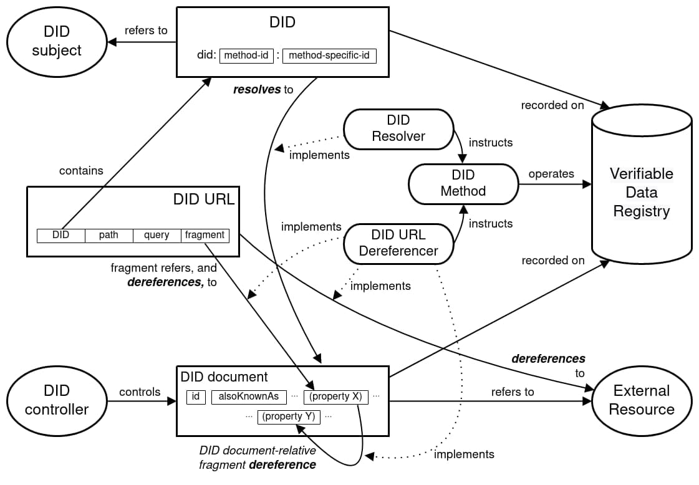
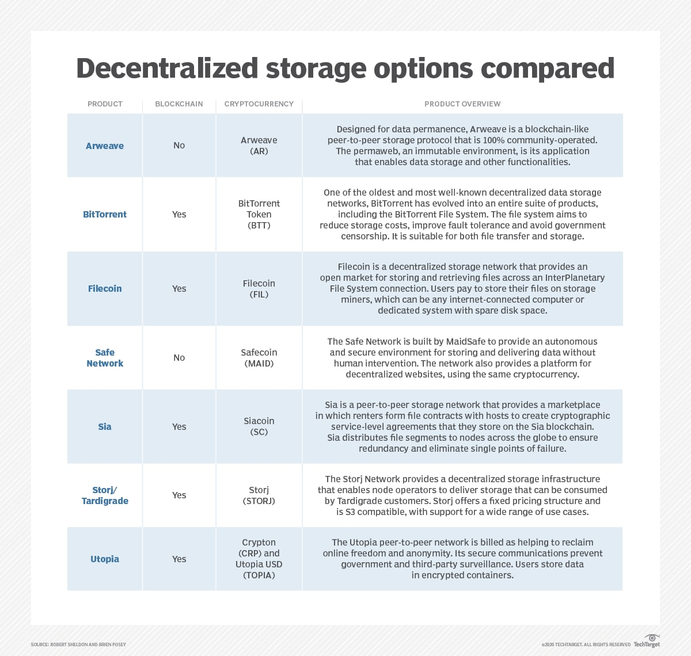

- automatically published
- For distributed Web3, and by extension metaverse applications toflourish it is necessary to solve the identificationproblem.king1966fisher Without a solution tothisbots, scammers, and AI actors will reduce usefulness and usability ofand already quite arcane user experience.
- This page is an oddity because most of traditional DID/SSI isn’t really fit for purpose. Distributed self sovereign identity has a great elevator pitch though. Individuals should be empowered through technology to manage their own data, without manipulation or exploitation by centralised corporate behemoths. In practice it’s a staggeringly complex proposition which increases risk to the individual,decreases convenience, and despite much work, does not even make muchsense in it’s own terms. Webs of trust are viable so this means Nostr,Marking, orpubky which will be discussed, but are early products.
Applications of DID/SSI
- Some of the likely, and discussed applications for DID/SSI are the moreinherently private and personally valuable sets of data an individualmight generate throughout their life. The theory is that subsets of suchdata could then be digitally revealed by the individual when required,and that cryptographic verification built into the system wouldguarantee the veracity of the data to the receiving party. It is alsopossible to make use of “zero-knowledge proof” such that assertions canbe made about about the contents of the data without revealing the dataitself. A good example of this an age verification challenge, where athreshold age could be asserted without necessarily revealing the dateof birth. Other keystone uses of the technology are:
- Health documents history
- Qualifications and certifications
- Financial record and relationships with those of others
- Contacts, connections to other people and their appropriate data, including things like shared and personal calendars
- It’s also possible to extend this key management ethos to all logincredentials, and all data currently stored on centralised servers. Thisis the tension discussed in the chapter about Web3. Proponents thinkthat using something like a DID/SSI stack to manage encryption,decryption and access to data within cloud services gives the user thebest of all worlds. They see simply logging in with a cryptographicwallet, and using that same public/private key pair to manage the databeyond as some kind of panacea. This is very complex stuff though, andit seems very likely they just haven’t thought this through enough.
Classic DID/SSI
- Distributed identity / self sovereign identity has been extensivelyresearched for decades, with hundreds of peer reviewed papers, andextensive support from the world wide webconsortium. The academic field nowseems quite ossified and has settled on a couple of hundred ‘schema’which they feel underpin the next layer of development. It is a complexfield,and the language and diagrams are arcane and self referential.

- Moreover the minimal implementation of such proposed systems hints ata federated model ofcentralised/federated‘truth’to enable persistence of identifiers over time. The major failing of the DID/SSI work to date is a lack of meaningfuluse cases with incentives for adoption.
- This is clearly explained byLockwoodlockwood2021exploring who proposes that the pathway toadoption of ‘classic’ DID/SSI requires an incentive over and above thecurrent identity management on the web. Being distributed is not enough.Especially in the light of questionable assurances of this even beingtrue.
- Perhaps most concerning is this recentexchange on the mailing lists. Here, two long standing developers of DID say the following: it“Not a single entity I know that’s doing production deployments hasactually vetted did:ion and found it to be production capable. This goes for every DLT-based DID Method out there
- even the one we’re working on. I am highly sceptical of anyone that says that any DID Method is ready for production usage at present. Agreed — as one of the proponents of DLTs (in particular permissionless public ones) none are mature enough yet for production.”. It seems then that we can rule out use of these technologies?
DID principles
- The core principles of distributed identity are that there should bepersistent identifiers, like real world documents which assert identity,but with extended use cases. These should be permanent, and resolvableeverywhere, forever. Underpinning this is cryptographically verifiableand decentralised data, managed by the user, or their trusted proxy. Asprimitives this makes them lifetime digital assets, that are portable,and unconfiscatable, with no required reliance on a trusted third party.By this stage in the book you should be familiar with these concepts,but application of this fundamental mindset to all personal data anddigital interactions is a bigger reach even than money and value.
What’s in a DID document?
- All classic DID is underpinned by a DID document what bootstrap theservices it’s connected to. It is made up of one or more public keys.The documents can make use of services such as timestamps, cryptographicsignatures, proofs, delegations, and authorisations. They should containthe minimum amount of information to accomplish the specific taskrequired of them.
Federated social media trust
- This section about newer technologies is perhaps best summarised byJackDorsey,ex CEO of twitter, paraphrased here:
- “I’ll start with the principles I’ve come to believe based on everything I’ve learned and experienced through my past actions as a Twitter co-founder and Lead:
- Social media must be resilient to corporate and government control.
- Only the original author may remove content they produce.
- Moderation is best implemented by algorithmic choice.
- The biggest mistake I made was continuing to invest in building tools for us to manage the public conversation versus building tools for the people using Twitter to easily manage it for themselves this burdened the company with too much power and opened us to significant outside pressure such as advertising budgets. I generally think companies have become far too powerful. The only way I know of to truly live up tot hese three principles is a free and open protocol for social media that is not owned by a single company or group of companies and is resilient to corporate and government influence the problem today is that we have companies who own both the protocol and discovery of content which ultimately puts one person in charge of what’s available and seen or not this is by definition a single point of failure no matter how great the person and over time will fracture the public conversation and may lead to more control by governments and corporations around the world.”
- “I’ll start with the principles I’ve come to believe based on everything I’ve learned and experienced through my past actions as a Twitter co-founder and Lead:
- The following technologies were selected for this book long beforeDorsey wrote those words, but they itare the technologies in which he isinvesting his time and money to further those 3 principles. Keybase isan interesting example of how proofs ont he internet can lean upon oneanother to provide a corpus of trusts. It provides a model of importingproofs from various socialmedia sites. This allows importing of reputation into new ecosystems.
RGB SSI
Microstrategy Inscription based DID
Lightning
- It is possible to log into a website using only Lighting, as in StackerNews.
Web5, Bluesky, & Microsoft ION
- Promisingly Jack Dorsey’s company TBD is working on a project called“Web5”. Details are scantbut the promise is decentralised and/or self hosted data and identityrunning on Bitcoin, without recourse to a new token. it“Componentsinclude decentralized identifiers (DIDs), decentralized web node (DWNs),self-sovereign identity service (SSIS) and a self-sovereign identitysoftware development kit (ssi-sdk)”.
- Web5 leverages the ION identity stack. All this looks to be exactly whatour metaverse system requires, but the complexity is likely to be quitehigh as it is to be built on existing DID/SSI research which is prettycomplex and perhaps has problems.
- They readily admit they do not have a workingsolution at this time: it“Atpresent, none of the DID methods meet our standards fully. Many existingDID networks are permissionless blockchains which achieve the abovegoals but with relatively poor latency (ION takes roughly 20 minutes forcommitment finality). Therefore we have chosen to support did-web and atemporary method we’ve created called did-placeholder. We expect thissituation to evolve as new solutions emerge.”
ION
- While working at Microsoft on ION Daniel Buchner (now working at Square)or Henry Tsai said thefollowing,which is worth quoting verbatim:
- “While ledger-based consensus systems, on the surface, would seem toprovide the same general features as one another, there are a few keydifferences that make some more suitable for critical applications, likethe decentralized identifiers of human beings. Some of theseconsiderations and features are:
- The system must be open and permissionless, not a cabal of authorities who can exclude and remove participants.
- The system must be well-tested, and proven secure against attack over a long enough duration to be confident in.
- The system must produce a singular, independently verifiable record that is as immutable as possible, so that reversing the record the system produces is infeasible.
- The system must be widely deployed, with nodes that span the globe, to ensure the record is persisted.
- The system must be self-incentivized, so that nodes continue to operate, process, and secure the record over time. The value from operation must come from the system directly, because outside incentive reliance is itself a vector for attack.
- The cost to attack the system through any game theoretically available means must be high enough that it is infeasible to attempt, and even if an ultra-capitalized attacker did, it would require a weaponized mobilization of force and resources that would be obvious, with options for mitigation.
- The outcome:
- Number 1 eliminates private and permissioned ledgers
- Number 2 eliminates just about all other ledgers and blockchains, simply because they are inadequately tested
- For the metrics detailed in 3-6, Bitcoin is so far beyond all other options, it isn’t even close
- “While ledger-based consensus systems, on the surface, would seem toprovide the same general features as one another, there are a few keydifferences that make some more suitable for critical applications, likethe decentralized identifiers of human beings. Some of theseconsiderations and features are:
- Bitcoin is the most secure option by an absurdly large margin.”
- On the surface then it might seem that the choice is Bitcoin again, and indeed that the open source Microsoft ION stack is a natural choice, but it’s complex to run, the interactions with the blockchain have a cost implication which can’t be surmounted without every user owning some Bitcoin, and as we have seen, there is no formal validation of this system. In addition (in the current implementation) an identity proof does not need to be published to be valid, just timestamped. In this way an identity can be stolen and used years later to claim later chains of proof. It seems that it might be somewhat useful ‘at scale’ and is worth additional monitoring and investigation, especially given it’s integration into TBD
- Web5.
pubky
- pubky (previously slashtags) is a distributed identity open method being developed by Bitfinex and Tether under the Synonym suite. It’s origins date back to2011 and was initially seeded through academia, and government innovation grants to build on the concepts of BitTorrent, and later DAT. This eventually became the Hypercore protocol, with an additional rebranding to Holepunch in2021. It is essentially this system, a mobile app UX, and Bitcoin integration which forms the Synonym/pubky stack. There is a lot ofhistorical investment, new focus, and promising product design in theSynonym ecosystem which is forming about the this ‘web of trust’distributed data system. The suite will rely on Pear Credits to enableTether dollars to be passed around within the system. This may fosteradoption in emerging markets. The critical path nature of the Tetherintegration, and the complex intermingling of Synonym, Hypercore,Bitfinex, Tether, and Pear credits are potentially red flags, and thoughthe technology stack is quite interesting only Pear Credit are reallyuseful to our design.
CivKit
- CivKit, short for Civilization Kit, is an upcoming white paper fromCommerceblock, discussing adecentralized and unstoppable free market solution based on Bitcoin. Theproject aims to build on top of Bitcoin to create an environment whereanyone can trade anything with anyone else.
- Phase one focuses on creating a marketplace built on top of Nostr, aninteroperable communication protocol. This allows different serviceslike Paxful, HODL HODL, or Nostr app to communicate and operate acrosseach other.
- Phase two aims to develop a mobile-friendly lightning wallet anddecentralized IDs (Know Your Peer) to replace centralized KYC (Know YourCustomer). This will provide a more secure and private environment fortraders.
- CivKit is intended to be an open-source decentralized toolkit thatvarious brands and platforms can build on top of. The goal is tofacilitate peer-to-peer trading and encourage a more circular economywhere people earn and spend Bitcoin rather than buying and selling it.While details are sparse it seems possible that this technology can beintegrated into our systems.
Nostr
- Nostr (pronounced no-star) is a decentralized openprotocol that aims to improve the social mediaexperience by addressing issues of censorship and data collection. Theprotocol operates by allowing users to post and view notes on serverscalled relays, and view and post these notes through apps calledclients. The open nature of the protocol allows for competition and afree flow of information, as users can choose to use different relays orclients if they are censored. This is because the protocol isdecentralized and controlled by no one.
- The decentralized nature of Nostr means that there is no centralauthority that can control the flow of information. This is achievedthrough the use of relays and clients, which are run by differentindividuals or entities. Users have the freedom to choose which relaysand clients they want to use, and as a result, their feeds are populatedwith content from the people they choose to follow. If a relay or clienttries to censor a user, they can simply switch to a different one. Thisis a major advantage over traditional centralized social media platformswhere one entity holds all the control over the flow of information andcan censor or manipulate the content that users see.
- Nostr is also not beholden to shareholders or investors. This means thatthe protocol can make decisions that prioritize the well-being andquality of discourse for users, rather than solely focusing on profit.This is in contrast to traditional social media networks like Twitter,Facebook, and TikTok, which are driven by the need to collect data onusers and sell ads to generate revenue. In these centralized platforms,users’ data is collected, analyzed and sold to the highest bidder, oftenwithout the user’s knowledge or consent. Nostr, on the other hand,allows users to have more control over their data and the ability tomonetize their content.
- Nostr also tightly integrates Bitcoin Lightning to support the protocol.This will hopefully enable secure transmission of value alongside theinformation and interactions on the platform. It also gives users theability to monetise their content.
- This potential step-change improvement to the social media experiencefor everyday people addresses issues of censorship and data collection.
- Nostr is “The simplest open protocol that is able to create acensorship-resistant global “social” network once and for all.”according to it’s github page. Morethan that it’s a client side validated proof of who a user isinteracting with, hence being in this identity section. To be clear,it’s not a completely peer to peer system in that it uses (very dumb)relay servers, but this gives it some of the best characteristics ofboth paradigms. This has the following advantages for our metaverseapplication;
- it’s lightweight, with minimal network overhead and complexity
- it’s real-time using websockets
- anyone can run a relay server, so one can be run in the deployment in the final section of the book.
- Each of the client peers connecting to the metaverse can be a relay and able to pass messages and proofs to the other clients without the metaverse server seeing the data or being online
- it’s open-source
- it is itself Turing Complete and therefore able to execute any code within it’s message protocol
- there are multiple usable libraries and tools
- it’s under active development with an excellent team. The lead, ‘Fiatjaf’ is one of the most prolific developers in the lightning space.
- it’s based on the same underlying cryptographic technology we are using elsewhere, indeed with it’s use of Bitcoin keys the identity system is global
- it provides the identity proof that we need to validate users and objects into a virtual space
- it enables message passing
- it scales to be a social network as required
- it need not rely on anything outside of a relay hosted on the metaverse server
- it can be scaled to provide one to many bulletin board style applications within the metaverse
- we can use it in private, group, and public modes as required
- it integrates with the torrent network allowing storage and external referencing of arbitrary data
- it can easily operate outside of the walled garden of the metaverse, extending the reach of the messages
- Nostr is incredibly promising,and integrating these relays in the metaverse servers and clients of theproposed technology stack in this book might allow us globally provableidentity, with privacy by design. It can provide message passing. If allentities in the collaborative mixed reality scenegraphs are also Nostrkey pairs then schema can be applied consistently with the economiclayer using the same key system as Bitcoin. Nostr has just received asubstantial grant from Dorsey. It is core to the design later in thebook. A curated list of projects and libraries is available ongithub.
- Luke Childs says:
- “Nostr makes a good candidate to be used as a very simple DID layer.Having “Login with Nostr” auth on websites solves a lot of problems in avery elegant way, and Nostr’s main use case as a social network protocolmakes it highly suited to be used as your main identity proving key.Compare “Login with Nostr” to similar “Login with Lightning”(LNURL-auth) specs to see some easy and obvious advantages: Remote signer vs local signer Login with Lightning requires access to remote keys, login with Nostrrequires access to local keys ideally stored in a browser extension. Dueto the way Lightning works you can only really have one instance. Youneed all your client devices linked to a single Lightning node, thismeans most clients will be connecting to the signer remotely. Now ifyour Lightning node goes down or you lose your connection you also can’tauth with any service. This could cause circular dependencies where youlose the connection to your Lightning node so you can’t auth with theservices you need to access to debug the issue with your Lightning nodelike your hosting provider or VPN account. You could technically solvethis by replicating your LN keys to other client devices only to be usedfor local auth signing but that introduces other risks. Unique identifier vs identity A Lightning node is not really an identity but a unique identifier. Itjust tells you the person that auths is the same random person thatauthed last time, it doesn’t tell you who they are. A nostr pubkey is anidentity. It tells you who they are, what their name is, what they looklike, who they know, how you can pay them, how you can message them. This is much more useful as an identity layer for an application. Theapplication can show their profile picture, username, send secure crossplatform push notifications via NIP-04 encrypted Nostr DMs, etc. Consistent identity across services Lightning pubkeys are sensitive private information and can leakconfidential financial information, Nostr pubkeys are safe to share withanyone. LNURL-auth adds extra steps to solve this by creating derivedsubkeys for identities that are unique to each service you auth with.This does not seem ideal, it seems the default case is that an identityis something that you do want to follow you across all your accounts.Nostr based auth behaves more appropriate in this regard. In the rarecase you need to achieve privacy and separation between certain servicesyou can still do that by using use a throwaway Nostr key for thoseservices. User relationships across services Since authing with Nostr shares areal social identity with the service, they can also see your Nostrsocial graph. This could be useful for connecting you to people youalready know on the new service. Low cost identity Ideally identities should be easy to create but hard to build upreputation to limit spam while avoiding excluding people from thenetwork. It’s not clear that it will be cost effective / scalable foreveryone to run their own Lightning node so tying individual identity toa single Lightning node pubkey is problematic. Nostr keys are easy tocreate and hard reputation can be earned via PoW/DNS or building astrong social graph.”
Micropayment based web
- It seems the war against disinformation is now being lost. Much iswritten in the media about Deepfake technology creating plausible fakevideos, but probably more pernicious is the use of toolkits to createentire plausible fake news sites using natural language AI such as GPT3.This makes it cheap to publish potentially market moving news which isthen rehypothecated by online news vendors who are hungry for clicks. Asthese pipelines become more mature it will be difficult to keep fakenews for financial or political gain out of the system. One interestingway to do this that itisn’t webs of trust or true cryptographic identityis to charge micropayments for “one to many” publication models. Thiswould imply a tiny instant payment for clicks, especially on socialmedia sites such as twitter. This kind of model has been discussed butis only possible in the context of systems such as Lightning whereinstant micropayment can be realised. It seems possible that this wouldprice out speculative ‘noise’ spam from the information space. It’sinteresting and ironic that the origin of proof of work was to underpinjust such a spam defeating system,dwork1992pricing and that Nakamotomentioned this application forBitcoinback in 2009. There is now much chatter about the integration of Bitcoinwith Twitter in light of Musks buyout of the social network.
- ![]./assets/files.jpg

Continuity is close on:
- web → webid (identity) → solid (social) → solid lite (lite,modern,working → nosdav (add nostr, and mastodon etc.)
- Repeat section?
- Distributed Identity & Trust----------------------------
- For distributed Web3, and by extension metaverse applications toflourish it is necessary to solve the identificationproblem.king1966fisher Without a solution tothisbots, scammers, and AI actors will reduce usefulness and usability ofand already quite arcane user experience.
- This chapter is an oddity because most of traditional DID/SSI isn’treally fit for purpose. Distributed self sovereign identity has a greatelevator pitch though. Individuals should be empowered throughtechnology to manage their own data, without manipulation orexploitation by centralised corporate behemoths. In practice it’s astaggeringly complex proposition which increases risk to the individual,decreases convenience, and despite much work, does not even make muchsense in it’s own terms. Webs of trust are viable so this means Nostr,Marking, orpubky which will be discussed, but are early products.
Applications of DID/SSI
- Some of the likely, and discussed applications for DID/SSI are the moreinherently private and personally valuable sets of data an individualmight generate throughout their life. The theory is that subsets of suchdata could then be digitally revealed by the individual when required,and that cryptographic verification built into the system wouldguarantee the veracity of the data to the receiving party. It is alsopossible to make use of “zero-knowledge proof” such that assertions canbe made about about the contents of the data without revealing the dataitself. A good example of this an age verification challenge, where athreshold age could be asserted without necessarily revealing the dateof birth. Other keystone uses of the technology are:
- health documents history
- qualifications and certifications
- financial record and relationships with those of others
- contacts, connections to other people and their appropriate data, including things like shared and personal calendars
- It’s also possible to extend this key management ethos to all logincredentials, and all data currently stored on centralised servers. Thisis the tension discussed in the chapter about Web3. Proponents thinkthat using something like a DID/SSI stack to manage encryption,decryption and access to data within cloud services gives the user thebest of all worlds. They see simply logging in with a cryptographicwallet, and using that same public/private key pair to manage the databeyond as some kind of panacea. This is very complex stuff though, andit seems very likely they just haven’t thought this through enough.
Classic DID/SSI
- Distributed identity / self sovereign identity has been extensivelyresearched for decades, with hundreds of peer reviewed papers, andextensive support from the world wide webconsortium. The academic field nowseems quite ossified and has settled on a couple of hundred ‘schema’which they feel underpin the next layer of development. It is a complexfield,and the language and diagrams are arcane and self referential as seen inFigure5.1.
Part of the DID SSI specs
- . Moreover the minimal implementation of such proposed systems hints ata federated model ofcentralised/federated‘truth’to enable persistence of identifiers over time. The major failing of the DID/SSI work to date is a lack of meaningfuluse cases with incentives for adoption. This is clearly explained byLockwoodlockwood2021exploring who proposes that the pathway toadoption of ‘classic’ DID/SSI requires an incentive over and above thecurrent identity management on the web. Being distributed is not enough.Especially in the light of questionable assurances of this even beingtrue. Perhaps most concerning is this recentexchangeon the mailing lists. Here, two long standing developers of DID say thefollowing: it“Not a single entity I know that’s doing production deployments hasactually vetted did:ion and found it to be production capable. This goesfor every DLT-based DID Method out there
- even the one we’re workingon. I am highly sceptical of anyone that says that any DID Method isready for production usage at present. Agreed — as one of the proponents of DLTs (in particular permissionlesspublic ones) none are mature enough yet for production.”. It seems thenthat we can rule out use of these technologies?
DID principles
- The core principles of distributed identity are that there should bepersistent identifiers, like real world documents which assert identity,but with extended use cases. These should be permanent, and resolvableeverywhere, forever. Underpinning this is cryptographically verifiableand decentralised data, managed by the user, or their trusted proxy. Asprimitives this makes them lifetime digital assets, that are portable,and unconfiscatable, with no required reliance on a trusted third party.By this stage in the book you should be familiar with these concepts,but application of this fundamental mindset to all personal data anddigital interactions is a bigger reach even than money and value.
What’s in a DID document?
- All classic DID is underpinned by a DID document what bootstrap theservices it’s connected to. It is made up of one or more public keys.The documents can make use of services such as timestamps, cryptographicsignatures, proofs, delegations, and authorisations. They should containthe minimum amount of information to accomplish the specific taskrequired of them.
Federated social media trust
- This section about newer technologies is perhaps best summarised byJackDorsey,ex CEO of twitter, paraphrased here: it
- “I’ll start with the principles I’ve come to believe based on everythingI’ve learned and experienced through my past actions as a Twitterco-founder and Lead:
- Social media must be resilient to corporate and government control.
- Only the original author may remove content they produce.
- Moderation is best implemented by algorithmic choice.
- The biggest mistake I made was continuing to invest in building toolsfor us to manage the public conversation versus building tools for thepeople using Twitter to easily manage it for themselves this burdenedthe company with too much power and opened us to significant outsidepressure such as advertising budgets. I generally think companies havebecome far too powerful. The only way I know of to truly live up tothese three principles is a free and open protocol for social media thatis not owned by a single company or group of companies and is resilientto corporate and government influence the problem today is that we havecompanies who own both the protocol and discovery of content whichultimately puts one person in charge of what’s available and seen or notthis is by definition a single point of failure no matter how great theperson and over time will fracture the public conversation and may leadto more control by governments and corporations around the world.
- The following technologies were selected for this book long beforeDorsey wrote those words, but they itare the technologies in which he isinvesting his time and money to further those 3 principles. Keybase isan interesting example of how proofs ont he internet can lean upon oneanother to provide a corpus of trusts. It provides a model of importingproofs from various socialmedia sites. This allows importing of reputation into new ecosystems.
Lightning
- It is possible to log into a website using only Lighting, as in StackerNews.
Web5, Bluesky, & Microsoft ION
- Promisingly Jack Dorsey’s company TBD is working on a project called“Web5”. Details are scantbut the promise is decentralised and/or self hosted data and identityrunning on Bitcoin, without recourse to a new token. it“Componentsinclude decentralized identifiers (DIDs), decentralized web node (DWNs),self-sovereign identity service (SSIS) and a self-sovereign identitysoftware development kit (ssi-sdk)”.
- Web5 leverages the ION identity stack. All this looks to be exactly whatour metaverse system requires, but the complexity is likely to be quitehigh as it is to be built on existing DID/SSI research which is prettycomplex and perhaps has problems.
- They readily admit they do not have a workingsolution at this time: it“Atpresent, none of the DID methods meet our standards fully. Many existingDID networks are permissionless blockchains which achieve the abovegoals but with relatively poor latency (ION takes roughly 20 minutes forcommitment finality). Therefore we have chosen to support did-web and atemporary method we’ve created called did-placeholder. We expect thissituation to evolve as new solutions emerge.”
ION
- While working at Microsoft on ION Daniel Buchner (now working at Square)or Henry Tsai said thefollowing,which is worth quoting verbatim:
- “While ledger-based consensus systems, on the surface, would seem toprovide the same general features as one another, there are a few keydifferences that make some more suitable for critical applications, likethe decentralized identifiers of human beings. Some of theseconsiderations and features are:
- The system must be open and permissionless, not a cabal of authorities who can exclude and remove participants.
- The system must be well-tested, and proven secure against attack over a long enough duration to be confident in.
- The system must produce a singular, independently verifiable record that is as immutable as possible, so that reversing the record the system produces is infeasible.
- The system must be widely deployed, with nodes that span the globe, to ensure the record is persisted.
- The system must be self-incentivized, so that nodes continue to operate, process, and secure the record over time. The value from operation must come from the system directly, because outside incentive reliance is itself a vector for attack.
- The cost to attack the system through any game theoretically available means must be high enough that it is infeasible to attempt, and even if an ultra-capitalized attacker did, it would require a weaponized mobilization of force and resources that would be obvious, with options for mitigation.
- The outcome:
- Number 1 eliminates private and permissioned ledgers
- Number 2 eliminates just about all other ledgers and blockchains, simply because they are inadequately tested
- For the metrics detailed in 3-6, Bitcoin is so far beyond all other options, it isn’t even close
- Bitcoin is the most secure option by an absurdly large margin.”
- On the surface then it might seem that the choice is Bitcoin again, andindeed that the open source Microsoft ION stack is a natural choice, butit’s complex to run, the interactions with the blockchain have a costimplication which can’t be surmounted without every user owning someBitcoin, and as we have seen, there is no formal validation of thissystem. In addition (in the current implementation) an identity proofdoes not need to be published to be valid, just timestamped. In this wayan identity can be stolen and used years later to claim later chains ofproof. It seems that it might be somewhat useful ‘at scale’ and is worthadditional monitoring and investigation, especially given it’sintegration into TBD
- Web5.
pubky
- Pubky is a distributed identity open method being developed byBitfinex and Tether under the Synonym suite. It’s origins date back to2011 and was initially seeded through academia, and governmentinnovation grants to build on the concepts of BitTorrent, and laterDAT. This eventually becamethe Hypercore protocol, with an additional rebranding to Holepunch in2021. It is essentially this system, a mobile app UX, and Bitcoinintegration which forms the Synonym/pubky stack. There is a lot ofhistorical investment, new focus, and promising product design in theSynonym ecosystem which is forming about the this ‘web of trust’distributed data system. The suite will rely on Pear Credits to enableTether dollars to be passed around within the system. This may fosteradoption in emerging markets. The critical path nature of the Tetherintegration, and the complex intermingling of Synonym, Hypercore,Bitfinex, Tether, and Pear credits are potentially red flags, and thoughthe technology stack is quite interesting only Pear Credit are reallyuseful to our design.
CivKit
- CivKit, short for Civilization Kit, is an upcoming white paper fromCommerceblock, discussing adecentralized and unstoppable free market solution based on Bitcoin. Theproject aims to build on top of Bitcoin to create an environment whereanyone can trade anything with anyone else.
- Phase one focuses on creating a marketplace built on top of Nostr, aninteroperable communication protocol. This allows different serviceslike Paxful, HODL HODL, or Nostr app to communicate and operate acrosseach other.
- Phase two aims to develop a mobile-friendly lightning wallet anddecentralized IDs (Know Your Peer) to replace centralized KYC (Know YourCustomer). This will provide a more secure and private environment fortraders.
- CivKit is intended to be an open-source decentralized toolkit thatvarious brands and platforms can build on top of. The goal is tofacilitate peer-to-peer trading and encourage a more circular economywhere people earn and spend Bitcoin rather than buying and selling it.While details are sparse it seems possible that this technology can beintegrated into our systems.
Nostr
- Nostr [pronounced no-star] is a decentralized openprotocol that aims to improve the social mediaexperience by addressing issues of censorship and data collection. Theprotocol operates by allowing users to post and view notes on serverscalled relays, and view and post these notes through apps calledclients. The open nature of the protocol allows for competition and afree flow of information, as users can choose to use different relays orclients if they are censored. This is because the protocol isdecentralized and controlled by no one.
- The decentralized nature of Nostr means that there is no centralauthority that can control the flow of information. This is achievedthrough the use of relays and clients, which are run by differentindividuals or entities. Users have the freedom to choose which relaysand clients they want to use, and as a result, their feeds are populatedwith content from the people they choose to follow. If a relay or clienttries to censor a user, they can simply switch to a different one. Thisis a major advantage over traditional centralized social media platformswhere one entity holds all the control over the flow of information andcan censor or manipulate the content that users see.
- Nostr is also not beholden to shareholders or investors. This means thatthe protocol can make decisions that prioritize the well-being andquality of discourse for users, rather than solely focusing on profit.This is in contrast to traditional social media networks like Twitter,Facebook, and TikTok, which are driven by the need to collect data onusers and sell ads to generate revenue. In these centralized platforms,users’ data is collected, analyzed and sold to the highest bidder, oftenwithout the user’s knowledge or consent. Nostr, on the other hand,allows users to have more control over their data and the ability tomonetize their content.
- Nostr also tightly integrates Bitcoin Lightning to support the protocol.This will hopefully enable secure transmission of value alongside theinformation and interactions on the platform. It also gives users theability to monetise their content.
- This potential step-change improvement to the social media experiencefor everyday people addresses issues of censorship and data collection.
- Nostr is “The simplest open protocol that is able to create acensorship-resistant global “social” network once and for all.”according to it’s github page. Morethan that it’s a client side validated proof of who a user isinteracting with, hence being in this identity section. To be clear,it’s not a completely peer to peer system in that it uses (very dumb)relay servers, but this gives it some of the best characteristics ofboth paradigms. This has the following advantages for our metaverseapplication;
- it’s lightweight, with minimal network overhead and complexity
- it’s real-time using websockets
- anyone can run a relay server, so one can be run in the deployment in the final section of the book.
- Each of the client peers connecting to the metaverse can be a relay and able to pass messages and proofs to the other clients without the metaverse server seeing the data or being online
- it’s open-source
- it is itself Turing Complete and therefore able to execute any code within it’s message protocol
- there are multiple usable libraries and tools
- it’s under active development with an excellent team. The lead, ‘Fiatjaf’ is one of the most prolific developers in the lightning space.
- it’s based on the same underlying cryptographic technology we are using elsewhere, indeed with it’s use of Bitcoin keys the identity system is global
- it provides the identity proof that we need to validate users and objects into a virtual space
- it enables message passing
- it scales to be a social network as required
- it need not rely on anything outside of a relay hosted on the metaverse server
- it can be scaled to provide one to many bulletin board style applications within the metaverse
- we can use it in private, group, and public modes as required
- it integrates with the torrent network allowing storage and external referencing of arbitrary data
- it can easily operate outside of the walled garden of the metaverse, extending the reach of the messages
- Nostr is incrediblypromising,and integrating these relays in the metaverse servers and clients of theproposed technology stack in this book might allow us globally provableidentity, with privacy by design. It can provide message passing. If allentities in the collaborative mixed reality scenegraphs are also Nostrkey pairs then schema can be applied consistently with the economiclayer using the same key system as Bitcoin. Nostr has just received asubstantial grant from Dorsey. It is core to the design later in thebook. A curated list of projects and libraries is available ongithub.
- Luke Childs says:it“Nostr makes a good candidate to be used as a very simple DID layer.Having “Login with Nostr” auth on websites solves a lot of problems in avery elegant way, and Nostr’s main use case as a social network protocolmakes it highly suited to be used as your main identity proving key.Compare “Login with Nostr” to similar “Login with Lightning”(LNURL-auth) specs to see some easy and obvious advantages: Remote signer vs local signer Login with Lightning requires access to remote keys, login with Nostrrequires access to local keys ideally stored in a browser extension. Dueto the way Lightning works you can only really have one instance. Youneed all your client devices linked to a single Lightning node, thismeans most clients will be connecting to the signer remotely. Now ifyour Lightning node goes down or you lose your connection you also can’tauth with any service. This could cause circular dependencies where youlose the connection to your Lightning node so you can’t auth with theservices you need to access to debug the issue with your Lightning nodelike your hosting provider or VPN account. You could technically solvethis by replicating your LN keys to other client devices only to be usedfor local auth signing but that introduces other risks. Unique identifier vs identity A Lightning node is not really an identity but a unique identifier. Itjust tells you the person that auths is the same random person thatauthed last time, it doesn’t tell you who they are. A nostr pubkey is anidentity. It tells you who they are, what their name is, what they looklike, who they know, how you can pay them, how you can message them. This is much more useful as an identity layer for an application. Theapplication can show their profile picture, username, send secure crossplatform push notifications via NIP-04 encrypted Nostr DMs, etc. Consistent identity across services Lightning pubkeys are sensitive private information and can leakconfidential financial information, Nostr pubkeys are safe to share withanyone. LNURL-auth adds extra steps to solve this by creating derivedsubkeys for identities that are unique to each service you auth with.This does not seem ideal, it seems the default case is that an identityis something that you do want to follow you across all your accounts.Nostr based auth behaves more appropriate in this regard. In the rarecase you need to achieve privacy and separation between certain servicesyou can still do that by using use a throwaway Nostr key for thoseservices. User relationships across services Since authing with Nostr shares areal social identity with the service, they can also see your Nostrsocial graph. This could be useful for connecting you to people youalready know on the new service. Low cost identity Ideally identities should be easy to create but hard to build upreputation to limit spam while avoiding excluding people from thenetwork. It’s not clear that it will be cost effective / scalable foreveryone to run their own Lightning node so tying individual identity toa single Lightning node pubkey is problematic. Nostr keys are easy tocreate and hard reputation can be earned via PoW/DNS or building astrong social graph.” Figure5.2shows that the adoption is potentially tremendously fast. ![]./assets/starhistory.png An illustration of the enthusiasm for Nostr compared to traditional DID based on GitHub ‘stars’.
- This provides a web interface into the metaverse providing:
- simple cryptographic identity assurance
- private peer to peer chat
- group chats and channels
- email to private message relay
- links into media on web hosts
- The pace of development on Nostr is dizzying. Peer to peer video andaudio will allow us to link metaverse instances, between peers, throughapplications such as Monstr.
- It’s notable that Nostr has it’s own inexpensive hardware signingdevice to protectidentity in situations where this might be necessary. bfThe proposed integration of Nostr social media and messaging, alightning layer with digital objects such as Fedimint, Zerosync or RGB,AI agents, Vircadia, and federated Bitcoin is the core value propositionof this book. This work pre-dates Meta andZuckerbergsstated intent in this regard by 18 months, and is differentiated stillby our focus on emerging markets and decentralisation.
NIP-05
- At this time, the nascent identity layer in nostr leans on NIP-05. Thisis a distributed identity management system that maps Nostr keys toDNS-based internet identifiers. In events of kind 0 (setmetadata), the“nip05” key can have an internet identifier as its value. Clients splitthe identifier into the local part and domain and make a GET request tothe specified URL. The response should be a JSON document with a “names”key containing a mapping of names to hex-formatted public keys. If thepublic key matches the one from the setmetadata event, the clientaccepts the association and considers the “nip05” identifier valid.
- Clients may find users’ public keys from internet identifiers by firstfetching the well-known URL and then checking for a matching “nip05”.When following public keys, clients must prioritize the keys over NIP-05addresses. Public keys must be in hex format. Clients can enable userdiscovery through search boxes, allowing users to find profiles byentering internet identifiers. The identifier can be used as the “root”identifier, displayed as just the domain. The protocol supports bothdynamic and static servers by using the local part as a query string.
Nostr Protocol as the keystone
- The Nostr protocol can be used to store and share valuable contentacross the network. This is ably demonstrated by the ‘Highlighter’project which allows users to store importantnotes from around the web using nostr. In the context of our federatedsocial media trust model, the Nostr protocol can serve as the underlyinglayer that connects various instances of virtual spaces, thus enablingseamless data exchange and interoperability among them. Highlighterdemonstrates that nostr events can be leveraged to create, store, andinteract with valuable across networks. By utilizing this concept, wecan extend the functionality to support federated social media trust,allowing users to carry their reputation, identity, and cryptographicproofs across different virtual spaces and social media platforms.
Nostr marketplace in LnBits
- The nostr markets plugin forLnBits allows virtual ‘stalls’ to be setup and payment to be mediatedthrough nostr. This is obviously a great expansion to the usefulness ofour integration
Integrating Cryptographic Proofs and Reputation
- To create a trusted environment within the federated network, we mustestablish a mechanism for importing and verifying cryptographic proofsfrom various sources, such as social media sites and other digitalplatforms. By doing so, we enable users to bring their existingreputation and trust from these platforms into the new ecosystem, thusfacilitating trust-based interactions and collaboration within thenetwork. We can leverage the Nostr protocol and the NIP05 specificationto import these cryptographic proofs, creating a secure and verifiablesystem for identity management and trust propagation. The NIP05specification allows for the creation and verification of identityproofs within the Nostr protocol, thus enabling the seamless integrationof trust and reputation data from external sources.
- By utilizing the Nostr protocol as the underlying layer, we canestablish connections between objects, people, and AI actors within thefederated network. This interconnected ecosystem allows for seamlesscollaboration, information sharing, and trust-based interactions amongall participants. The open-source collaboration infrastructure wepropose can facilitate the development of various applications andservices that leverage the federated network, such as virtualworkspaces, AI-assisted creativity tools, and more. The uncensorablenature of this protocol further supports the inclusivity andaccessibility we feel so important, ensuring that participants fromdifferent regions and backgrounds can take part in the digital societyand contribute to its growth.
- This federated social media trust model, built on the Nostr protocol,allows for the establishment of a robust, inclusive, and trust-basednetwork that connects various virtual spaces, social media platforms,and AI systems. By leveraging the lessons learned from the otherattempts in the space, and by maximising the inclusion of externalcryptographic proofs from multiple sources, we can create acomprehensive trust system that fosters collaboration, innovation, andshared growth within the digital society.
- The Nostr protocol, with its decentralized and open-source nature,provides a solid foundation for linking and federating objects, people,and AI actors across collaborative spaces in digital society. Byleveraging the Nostr protocol, we can build a robust and trust-basednetwork that interconnects various virtual spaces, social mediaplatforms, and AI systems. One of the key aspects of this trust-basednetwork is the ability to import cryptographic proofs from differentsources, similar to Keybase’s approach to importing proofs from varioussocial media sites (KeybaseProofs).
StrFry relays
- The Stirfry relay software provides high-performance infrastructure forbuilding decentralized social media applications on top of the Nosterprotocol. As an open source project written in C++, Stirfry emphasizesefficiency, flexibility, and community-driven governance.
- At the core of Stirfry is its high-speed database engine. Rather thanusing a traditional SQL database, Stirfry implements the LightningMemory-Mapped Database (LMDB)
- an embedded key-value store optimizedfor performance. Reads are lock-free, enabling unlimited parallel querythroughput. Writes require only a short-held lock, ensuring minimalinterference. LMDB’s “shadow paging” design allows isolated read-onlytransactions via multi-version concurrency control (MVCC). This preventsreads from blocking writes and vice versa.
- To maximize database performance, Stirfry stores Noster events directlyin FlatBuffers
- an efficient binary format allowing direct accesswithout serialization. The original JSON payloads are preserved tofacilitate transmission back to clients. Additional database files indexevents on fields like timestamps and authors, accelerating filterqueries. Periodic compaction optimizes the layout for faster operations.
- Stirfry adopts a multi-threaded, modular architecture. A websocketthread accepts new client connections and routes incoming requests. Aningester thread validates and pre-processes each request before passingto appropriate handlers. Doing signature checks and filter compilationupfront avoids repeating work. A single writer thread batches databasewrites to amortize transaction overhead. Multiple worker threads handleread queries, fairly scheduling between long and short requests.Dedicated monitor threads track active filters and stream matchingevents to subscribed clients. Passing messages between threads insteadof sharing data structures improves efficiency.
- Additional features further enhance Stirfry’s capabilities. Gracefulshutdown support allows stopping new connections while existing onescomplete. Hot configuration reloading provides runtime updates withoutrestarting. Flexible write policy plugins enable custom contentmoderation. Streaming websocket compression and Zstandard dictionariescompress traffic. Syncing protocols like Negentropy facilitate efficientrelay replication, powering mesh network topologies. Geo-replication bythe relay.org community offers low latency worldwide access. The customTemplar HTML templating library assists crafting simple, fastdecentralized frontends.
Micropayment based web
- It seems the war against disinformation is now being lost. Much iswritten in the media about Deepfake technology creating plausible fakevideos, but probably more pernicious is the use of toolkits to createentire plausible fake news sites using natural language AI such as GPT3.This makes it cheap to publish potentially market moving news which isthen rehypothecated by online news vendors who are hungry for clicks. Asthese pipelines become more mature it will be difficult to keep fakenews for financial or political gain out of the system. One interestingway to do this that itisn’t webs of trust or true cryptographic identityis to charge micropayments for “one to many” publication models. Thiswould imply a tiny instant payment for clicks, especially on socialmedia sites such as twitter. This kind of model has been discussed butis only possible in the context of systems such as Lightning whereinstant micropayment can be realised. It seems possible that this wouldprice out speculative ‘noise’ spam from the information space. It’sinteresting and ironic that the origin of proof of work was to underpinjust such a spam defeating system,dwork1992pricing and that Nakamotomentioned this application forBitcoinback in 2009. There is now much chatter about the integration of Bitcoinwith Twitter in light of Musks buyout of the social network. ![]./assets/files.jpg Comparison of distributed file stores